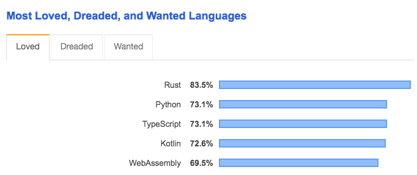
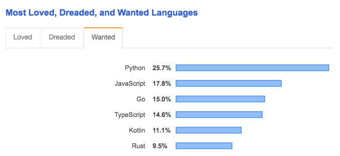

layout: true <div class="my-header"> <svg height="15" width="18" viewBox="0 0 24 24"xmlns="http://www.w3.org/2000/svg" style="fill: #ffffff; margin-left:4px;" role="img"><title>Introducción a Python</title><path d="M14.31.18l.9.2.73.26.59.3.45.32.34.34.25.34.16.33.1.3.04.26.02.2-.01.13V8.5l-.05.63-.13.55-.21.46-.26.38-.3.31-.33.25-.35.19-.35.14-.33.1-.3.07-.26.04-.21.02H8.83l-.69.05-.59.14-.5.22-.41.27-.33.32-.27.35-.2.36-.15.37-.1.35-.07.32-.04.27-.02.21v3.06H3.23l-.21-.03-.28-.07-.32-.12-.35-.18-.36-.26-.36-.36-.35-.46-.32-.59-.28-.73-.21-.88-.14-1.05L0 11.97l.06-1.22.16-1.04.24-.87.32-.71.36-.57.4-.44.42-.33.42-.24.4-.16.36-.1.32-.05.24-.01h.16l.06.01h8.16v-.83H6.24l-.01-2.75-.02-.37.05-.34.11-.31.17-.28.25-.26.31-.23.38-.2.44-.18.51-.15.58-.12.64-.1.71-.06.77-.04.84-.02 1.27.05 1.07.13zm-6.3 1.98l-.23.33-.08.41.08.41.23.34.33.22.41.09.41-.09.33-.22.23-.34.08-.41-.08-.41-.23-.33-.33-.22-.41-.09-.41.09-.33.22zM21.1 6.11l.28.06.32.12.35.18.36.27.36.35.35.47.32.59.28.73.21.88.14 1.04.05 1.23-.06 1.23-.16 1.04-.24.86-.32.71-.36.57-.4.45-.42.33-.42.24-.4.16-.36.09-.32.05-.24.02-.16-.01h-8.22v.82h5.84l.01 2.76.02.36-.05.34-.11.31-.17.29-.25.25-.31.24-.38.2-.44.17-.51.15-.58.13-.64.09-.71.07-.77.04-.84.01-1.27-.04-1.07-.14-.9-.2-.73-.25-.59-.3-.45-.33-.34-.34-.25-.34-.16-.33-.1-.3-.04-.25-.02-.2.01-.13v-5.34l.05-.64.13-.54.21-.46.26-.38.3-.32.33-.24.35-.2.35-.14.33-.1.3-.06.26-.04.21-.02.13-.01h5.84l.69-.05.59-.14.5-.21.41-.28.33-.32.27-.35.2-.36.15-.36.1-.35.07-.32.04-.28.02-.21V6.07h2.09l.14.01.21.03zm-6.47 14.25l-.23.33-.08.41.08.41.23.33.33.23.41.08.41-.08.33-.23.23-.33.08-.41-.08-.41-.23-.33-.33-.23-.41-.08-.41.08-.33.23z"></path></svg> <span>C1. Breve Introducción a Python</span> </div> <div class="my-footer"> <p> 2020 - Isaac Lera </p> </div> --- class: center, middle # C1. Python ### - una breve introducción - --- background-image: url(https://www.python.org/static/community_logos/python-logo-master-v3-TM.png) opacity: 0.2; # Python ... -- es un lenguaje interpretado, dinámico y multiplataforma. -- soporta programación orientada a objetos, imperativa e incluso programación funcional. -- es de código abierto y libre. -- conviven las versiones 2.7 y 3.8 -- viene con **baterias incluidas**: Pypy, Pandas, Numpy, Django, Scikit-learn, PyQt, Pygame, etc. -- y sí, su nombre viene de **Monty Python**! --- # ¿Por qué Python? -- - [Stackoverflow 2019](https://insights.stackoverflow.com/survey/2019#technology-_-most-loved-dreaded-and-wanted-languages) .cols[ .fifty[  ] .fifty[  ] ] -- - Proyectos de Software Libre -- - Comunidad científica (Ingenierías, Ciencias, Ciencias Sociales, Medicina, Economía, Biología, Geográfia, Lenguaje,...): **baterías incluidas**, rápido prototipaje, flexibilidad, potencia, proyectos de análisis de datos, proyectos de IA, ... -- - La clave es su **sintaxis**! --- # Comparativa odiosa ### Lectura de un fichero .cols[ .fifty[ Con **Python**: ```python file = open("file.txt") ``` y un fichero CSV: ```python import pandas df = pandas.read_csv('data.csv', sep=";") print(df) ``` ] .fifty[ Con **Java** ([fuente](https://www.w3schools.com/java/java_files_read.asp)): ```java import java.io.File; // Import the File class import java.io.FileNotFoundException; // Import this class to handle errors import java.util.Scanner; // Import the Scanner class to read text files public class ReadFile { public static void main(String[] args) { try { File myObj = new File("filename.txt"); Scanner myReader = new Scanner(myObj); ... ``` y un fichero CSV: ```java ... List<List<String>> records = new ArrayList<>(); try (BufferedReader br = new BufferedReader(new FileReader("book.csv"))) { String line; while ((line = br.readLine()) != null) { String[] values = line.split(COMMA_DELIMITER); records.add(Arrays.asList(values)); } } ``` ] ] --- <img class="work" src="icons/bookmark-star-fill.svg" alt="TODO" width="100" height="100" title="Bookmark"/> # Comparativa odiosa ### Baterias incluidas: *slicing* .cols[ .fifty[ Con **Python**: ```python my_string = "Hola Mundo" print(my_string) print(my_string[3:7]) print(my_string[5:]) print(my_string[-4:]) print(my_string[:-1]) print(my_string[::-1]) ``` ] .fifty[ Con Java: ```java public String slice_start(String s, int startIndex) { if (startIndex < 0) startIndex = s.length() + startIndex; return s.substring(startIndex); } public String slice_end(String s, int endIndex) { if (endIndex < 0) endIndex = s.length() + endIndex; return s.substring(0, endIndex); } public String slice_range(String s, int startIndex, int endIndex) { if (startIndex < 0) startIndex = s.length() + startIndex; if (endIndex < 0) endIndex = s.length() + endIndex; return s.substring(startIndex, endIndex); } ... ``` ######[Fuente](https://stackoverflow.com/questions/17307761/is-there-a-java-equivalent-to-pythons-easy-string-splicing) ] ] --- # El curso - Material en AulaDigital y en [Github](https://github.com/wisaaco). - Clases con BBCollaborate. - Sesiones de Zoom (indivudales/grupales) para resolver dudas puntuales. - Puntualidad y buena conducta. - Ambiente participativo y constructivo. - *Certificado de presencialidad*, asistencia obligatoria a un 80% de las clases. - *Certificado de aprovechamiento*, entrega de una serie de ejercicios obligatorios o proyecto (~pocos). --- # Contenido (10h) - C0. Instalación de Python*. - **C1. Python. GUIs: Jupyter, Spyder y Pycharm CE.** - C2 en paralelo iremos viendo: - C2.I Tipos de objetos en Python: números, strings, listas, diccionarios, tuplas, ficheros y otros. - C2.II Sintaxis y estructuras de control. - C3. Funciones y argumentos. - C4. Librerias, environments y proyectos. - C5. Librería *Numpy*. - Proyecto o ejercicios (no presenciales: 2h). --- # Competencias - Capacidad de entender y ejecutar programas en Python - Capacidad de resolver problemas clasicos de algoritmica con Python. - Lo importante: que tengáis capacidad de manejar una *herramienta* muy eficaz para el prototipado de proyectos. -- - ¿Alguna duda? --- class: center, middle # ¡Empezamos! --- # Entornos de desarrollo <img class="work" src="icons/bookmark-star-fill.svg" alt="TODO" width="100" height="100" title="Bookmark"/> - ### Terminal -- - ### Editores de texto, ejemplo: Sublime + Terminal [url](https://hackpuntes.com/preparando-sublime-text-3-programar-python/) -- - ### Spyder [url](https://www.spyder-ide.org/) -- - ### Notebooks de Jupyter [url](https://jupyter.org/), [Demo](https://hub.gke2.mybinder.org/user/jupyterlab-jupyterlab-demo-e0ucdnxh/lab) -- - ### PyCharm [url](https://www.jetbrains.com/es-es/pycharm/) --- background-color: #eeeeee class: center, middle # Fin C1. <a href="C2.html"> <svg class="svg-icon" viewBox="0 0 20 20" height="35" width="35" alt="Siguiente Tema"> <path fill="#aaaaaa" d="M19.629,9.655c-0.021-0.589-0.088-1.165-0.21-1.723h-3.907V7.244h1.378V6.555h-2.756V5.866h2.067V5.177h-0.689V4.488h-1.378V3.799h0.689V3.11h-1.378V2.421h0.689V1.731V1.294C12.88,0.697,11.482,0.353,10,0.353c-5.212,0-9.446,4.135-9.629,9.302H19.629z M6.555,2.421c1.522,0,2.756,1.234,2.756,2.756S8.077,7.933,6.555,7.933S3.799,6.699,3.799,5.177S5.033,2.421,6.555,2.421z"></path> <path fill="#aaaaaa" d="M12.067,18.958h-0.689v-0.689h2.067v-0.689h0.689V16.89h2.067v-0.689h0.689v-0.689h-1.378v-0.689h-2.067v-0.689h1.378v-0.689h2.756v-0.689h-1.378v-0.689h3.218c0.122-0.557,0.189-1.134,0.21-1.723H0.371c0.183,5.167,4.418,9.302,9.629,9.302c0.711,0,1.401-0.082,2.067-0.227V18.958z"></path> </svg> </a>